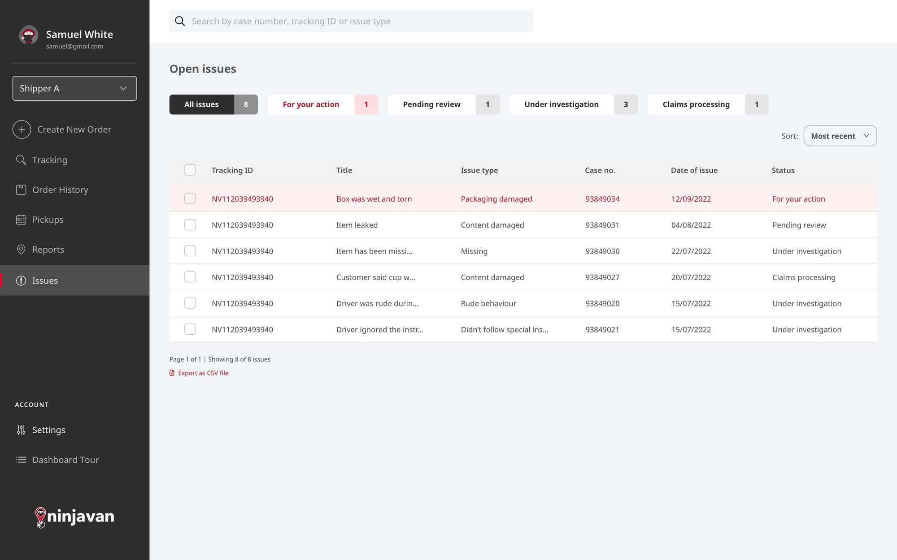
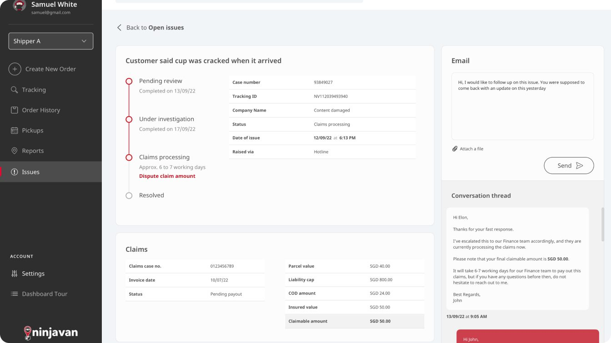

택배 문제, 접수부터 해결까지
택배에 문제가 생기면 세 팀이 움직이지만, 정작 셀러는 아무 소식도 듣지 못할 때가 많아요. 동남아시아 전역에서 이 과정이 실제로 어떻게 돌아가는지 리서치한 뒤, 셀러를 위한 셀프서비스 포털과 그 뒤에서 상담원이 쓰는 툴을 디자인했어요.

핸드오버 다섯 번, 팀은 셋
넘어갈 때마다 정보가 조금씩 새어 나갔어요.
셀러가 문제를 제기하면 상담원이 접수하고, 담당 해결팀이 조사한 뒤, 같은 경로를 거슬러 답이 돌아갔어요. 인터뷰에서 셀러들은 누가 내 케이스를 맡고 있기는 한지조차 모르는 게 가장 힘들다고 했어요. 게다가 케이스가 종료되면, 결과에 이의를 제기하는 방법은 새 케이스를 열고 처음부터 다시 설명하는 것뿐이었어요.
셀러가 들은 답"고객님의 케이스를 조사 중입니다."
저희가 매핑한 핸드오버를 그림으로 표현해봤어요. 핸드오버는 네 번, 그때마다 조금씩 사라져요.
전체를 봐야 보이는 문제
세 그룹이 얽혀 있어서, 하나만 고치면 문제가 자리만 옮겨요.
그래서 모든 방향에서 살펴봤어요. 동남아시아 전역의 셀러, 상담원, 해결팀을 인터뷰하고, 상담원 대상 사용성 설문과 셀러 대상 고객 노력 점수(CES) 설문도 함께 진행했어요. 그다음 각 주제가 얼마나 자주 나왔는지를 케이스 양, 응답 시간과 함께 따져서, 시스템 전체에 가장 도움이 될 변화를 찾았어요.
주문하던 곳에서, 해결까지
픽업을 예약하던 곳에서 이제 문제도 챙겨요.
예전에는 문제를 제기하려면 웹사이트에서 전화번호를 찾고, 접수가 됐기를 바라는 수밖에 없었어요. 그래서 셀러가 이미 주문 관리에 쓰던 택배 포털 안에 서비스 리커버리를 넣었어요. 폼은 주문 ID, 문제 유형, 물품 가액 증빙을 상담원이 입력하는 순서 그대로 물어봐서, 주고받는 일이 크게 줄었어요. 지연된 픽업과 배송은 이제 케이스가 자동으로 열려요.

낮은 점수, 다시 열리는 케이스
설문이 측정을 넘어, 다시 들어오는 문이 됐어요.
예전에는 고객 노력 점수 설문을 콜드콜과 이메일로 보냈는데, 모두에게 번거롭고 응답도 거의 없었어요. 그래서 설문을 포털 안, 해당 케이스 바로 옆으로 옮기고, 문제 유형별로 디자인한 새 HTML 이메일 템플릿에도 넣었어요. 이제 낮은 점수가 들어오면 대화가 다시 열리고, 다른 해결 방법을 제안해요.
점수를 남길 방법이 없는 평범한 텍스트 이메일.
포털이나 어떤 이메일에서든 탭 한 번으로 평가.
셀러는 처음부터 다시 시작하지 않고도 결과에 이의를 제기할 수 있어요.
A new pickup has been arranged
Hi Mancini,
We apologise for the missed pickup and have arranged a new one for you. Please find the details of the new pickup reservation below:
Reservation ID: TESTVALUE123
Pickup address: Test Address #01-23
Pickup date: 8/17/2021
Pickup timeslot: 9AM–12PM
If you have any questions regarding the parcel, please reply to this email and we'll get back to you as soon as we can.
30 Jalan Kilang Barat 159363
www.ninjavan.co
New delivery estimates for your parcels
Hi Mancini,
We're sorry that your parcels are delayed.
We are working to get them back on track as soon as possible. Please refer to the attached file for the updated delivery dates estimated for your parcels.
Otherwise, please rate your experience with Ninja Van so that we can continue to serve you better.
Rate Experience30 Jalan Kilang Barat 159363
www.ninjavan.co
상담원들은 Salesforce 기반 CRM에서 일했기 때문에, 케이스를 접수하고 관리하는 화면도 디자인했어요. 서비스 리커버리는 양쪽을 다 챙겨야 제대로 돌아가니까요.
하나 더, Ninja Van의 Akira
디자인 시스템이 필요한 이유, 숫자로.
Akira는 Ninja Van의 디자인 시스템 이니셔티브였어요. 저는 문서화와, 콘텐츠 기준을 컴포넌트 라이브러리 자체에 녹이는 일을 맡았어요. 조용하지만 오래가는 방식으로 제품의 일관성을 지켜줘요.
현장까지 지켜지는 근무 계획
Neuron Mobility · 마이크로모빌리티